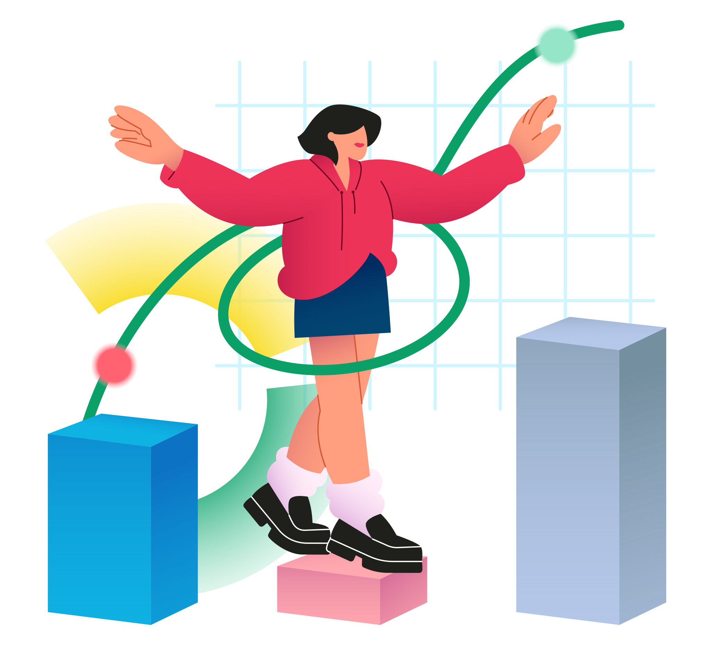
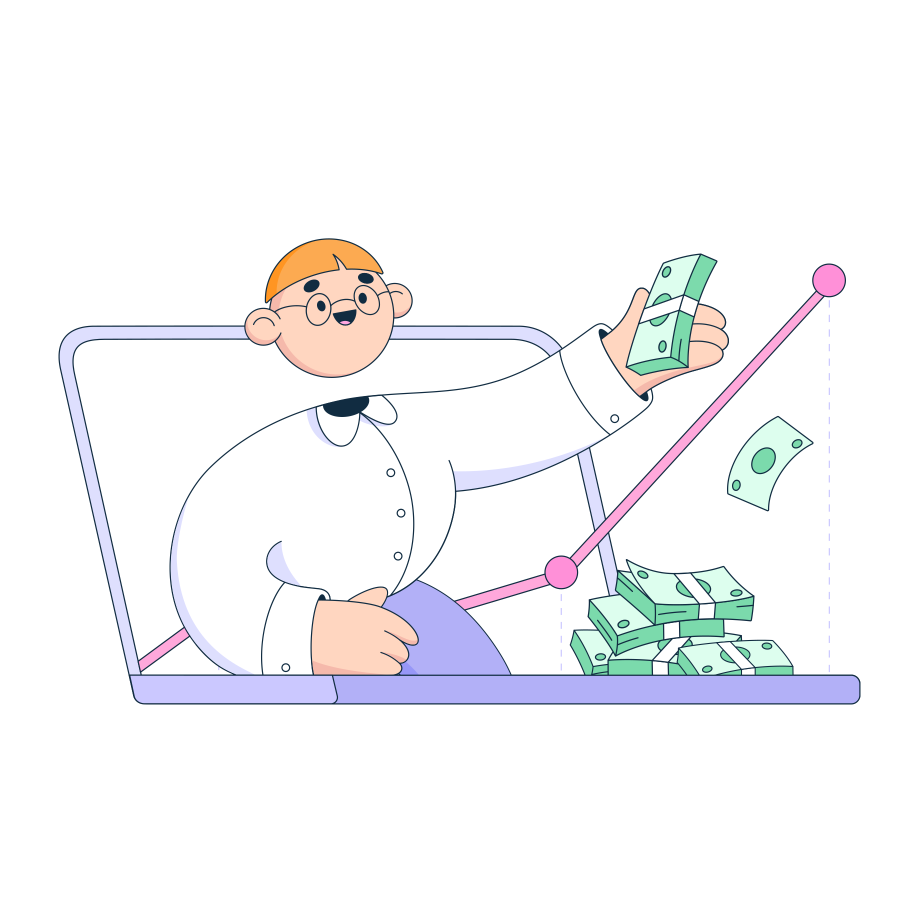

Modelos de negocio
En términos simples, un modelo de negocio es una descripción de cómo una empresa genera ingresos y beneficios a través de la creación, entrega y captura de valor. En el contexto de los negocios electrónicos, el modelo de negocio se refiere a la forma en que una empresa crea y entrega valor a sus clientes a través de canales en línea.
Modelos de negocio
Es importante que las empresas elijan el modelo de negocio adecuado para sus objetivos y recursos. Algunas preguntas importantes que las empresas deben considerar incluyen: ¿Cómo se crea y entrega el valor al cliente? ¿Cómo se generan ingresos y beneficios? ¿Cuál es el público objetivo y cuáles son sus necesidades? ¿Cómo se diferenciará la empresa de la competencia?
Una vez establecido.
Es importante seguir evaluando su efectividad y ajustarlo según sea necesario. Los cambios en la tecnología, el mercado y las necesidades del cliente pueden requerir ajustes en el modelo de negocio para mantener la relevancia y el éxito a largo plazo.
El modelo de negocio B2B (business-to-business)
En este modelo, una empresa vende sus productos o servicios a otra empresa que los utilizará en sus propias operaciones comerciales o los revenderá a sus clientes. El modelo B2B implica transacciones de mayor valor y es común en industrias como la manufactura, la tecnología, la construcción y la logística.
El modelo de negocio B2C (Business to Consumer)
es aquel en el que una empresa vende sus productos o servicios directamente a los consumidores finales. En este modelo, la empresa se enfoca en crear una experiencia de compra atractiva para el cliente, y en satisfacer sus necesidades y expectativas.
la empresa suele tener una presencia en línea a través de una página web o tienda virtual, que permite a los consumidores buscar y comprar productos o servicios en línea.
El modelo C2B (Consumer to Business)
Es el opuesto del modelo B2C. En este caso, son los consumidores quienes ofrecen sus servicios o productos a las empresas. Un ejemplo de modelo C2B es el de plataformas de freelancers como Upwork o Fiverr, donde los trabajadores independientes ofrecen sus servicios a las empresas que los necesitan. También es común en plataformas de crowdfunding, donde los consumidores ofrecen su dinero para financiar proyectos empresariales.
El modelo de negocio C2C (consumer-to-consumer)
se basa en la venta directa de productos o servicios entre consumidores. En otras palabras, una persona vende un producto o servicio a otra persona en un mercado en línea o sitio web especializado que facilita estas transacciones.
Un ejemplo de este modelo de negocio es eBay, donde los usuarios pueden comprar y vender productos a otros usuarios en la plataforma. Otro ejemplo es Etsy, un mercado en línea que se enfoca en productos hechos a mano y vintage.

Arrastra las palabras correctas a la casilla derecha
| Palabras | Correctas |
| B2B | C2B |
| B2C | D2C |
| Captura de valor | Marketing digital |
| Pequeñas empresas | D2D |
| C2C | Soluciones rentables |
Felicidades, llegaste al final.
Vamos a realizar una pequeña prueba para reforzar lo aprendido:
- 6 Preguntas (20 segundos cada una)
- Puntos por pregunta correcta
- 200 segundos en el reloj
- Preguntas aleatorias
- Tu resultado al final

- 6 Preguntas (20 segundos cada una)
- Puntos por pregunta correcta
- 200 segundos en el reloj
- Preguntas aleatorias
- Tu resultado al final